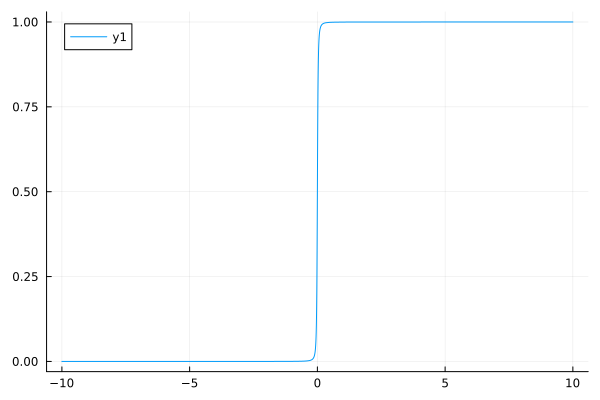
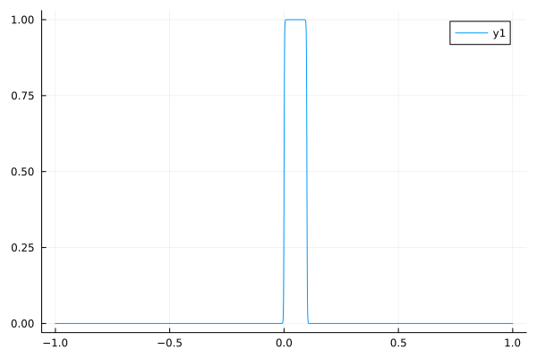
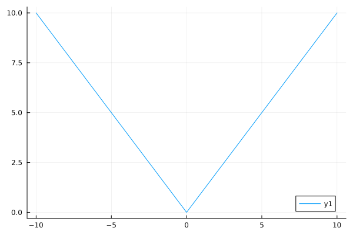
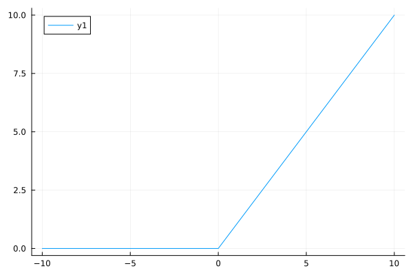
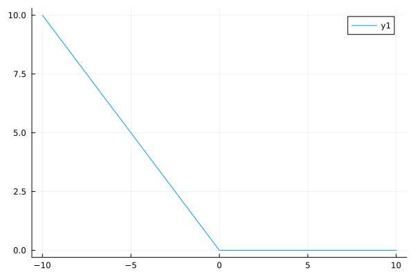
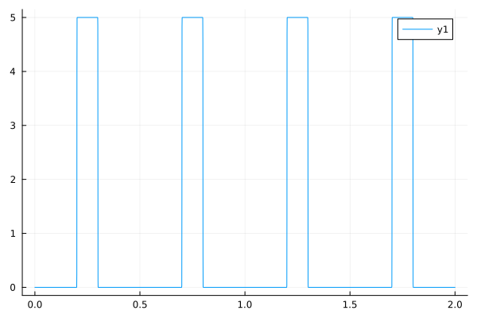

Use smooth functions#
Use smooth and differentiable functions instead of discontinuities for automatic differentiation (AD) and differential equation solvers.
Heaviside step function#
A Heaviside step function (0 when x < a, 1 when x > a) could be approximated with a steep logistic function.
using Plots
The function output switches from zero to one around x=0.
k is the steepness of the function.
function smoothheaviside(x, k=1000)
return 1 / (1 + exp(-k * x))
end
plot(smoothheaviside, -1, 1)
### Smooth step function with `sqrt`
function smoothstep_sqrt(x; c=(1//2)^10)
0.5 * (x / (sqrt(x^2 + c)) + 1)
end
plot(smoothstep_sqrt, -10, 10)

Smooth single pulse#
A single pulse could be built with a product of two step functions.
function singlepulse(x, t0=0, t1=0.1, k=1000)
smoothheaviside(x - t0, k) * smoothheaviside(t1 - x, k)
end
plot(singlepulse, -1, 1)

Smooth absolute value#
Inspired by: https://discourse.julialang.org/t/smooth-approximation-to-max-0-x/109383/13
Approximate abs(x)
function smoothabs(x; c=(1//2)^10)
hypot(x, c) - c
end
plot(smoothabs, -10, 10)
# Smooth max function

Approximate max(0, x)
function smoothmax(x; c=(1//2)^10)
0.5 * (x + smoothabs(x; c))
end
plot(smoothmax, -10, 10)

Smooth minimal function#
Approximate min(0, x)
function smoothmin(x; c=(1//2)^10)
0.5 * (smoothabs(x;c) - x)
end
plot(smoothmin, -10, 10)

Periodic pulses#
From: https://www.noamross.net/2015/11/12/a-smooth-differentiable-pulse-function/
function smoothpulses(t, tstart, tend, period=1, amplitude=period / (tend - tstart), steepness=1000)
@assert tstart < tend < period
xi = 3 / 4 - (tend - tstart) / (2 * period)
p = inv(1 + exp(steepness * (sinpi(2 * ((t - tstart) / period + xi)) - sinpi(2 * xi))))
return amplitude * p
end
plot(t->smoothpulses(t, 0.2, 0.3, 0.5), 0.0, 2.0)

This notebook was generated using Literate.jl.